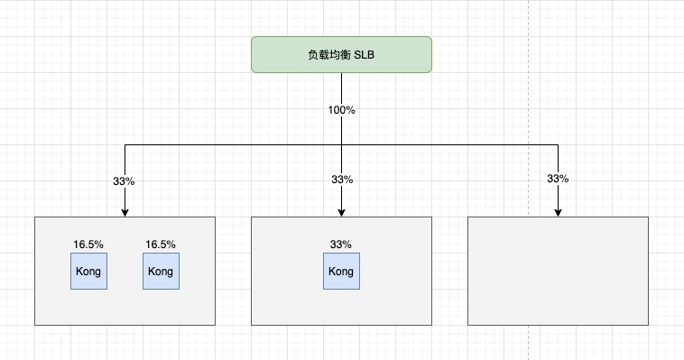
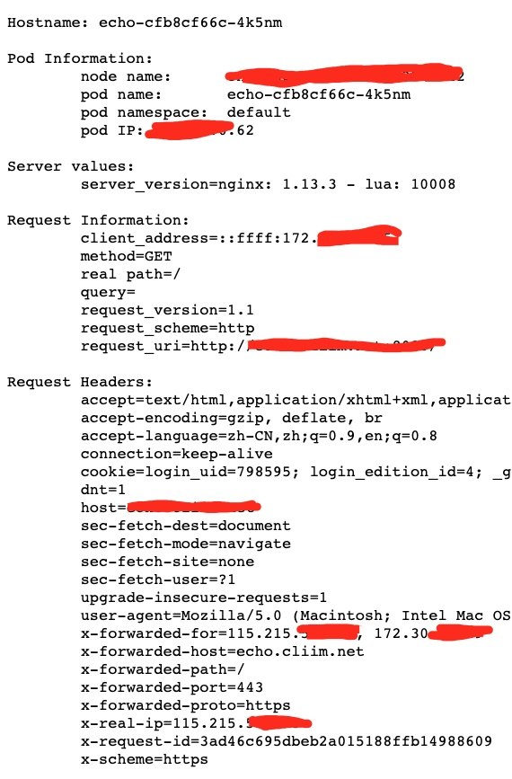

框架已经搭好，接下来就是对号入座了，在过程中，我们遇到了一些细碎的问题，如果不注意的话可能会采坑。
网关传递源 IP
这个问题其实分两方面，一方面当然是 Kong 传递源 IP，另一方面是 Kubernetes 转发流量到 Pods 时保留源 IP。
这里我们假设链路是，
请求 --> 负载均衡 --> 集群节点 --> Kong 网关实例 --> Pod
之前我们说过，我们的 Kong 是接在阿里云默认 nginx-ingress-controller 之后的，但这里我们为了简化，直接把涉及这方面的去掉了。
Kubernetes 保留客户端源 IP 的策略
参考文档:
K8s 官方文档：保留客户端源 IP。
service.spec.externalTrafficPolicy - 表示此服务是否希望将外部流量路由到节点本地或集群范围的端点。 有两个可用选项：Cluster（默认）和 Local。 Cluster 隐藏了客户端源 IP，可能导致第二跳到另一个节点，但具有良好的整体负载分布。 Local 保留客户端源 IP 并避免 LoadBalancer 和 NodePort 类型服务的第二跳， 但存在潜在的不均衡流量传播风险。
阿里云文档: 容器服务中多个SLB负载均衡并透传源 IP。
总结下来，如果要保留源 IP，那么我们就要选择 Local。但是有一点要注意的是，外部请求经过公网 IP 的负载均衡到达集群节点。
注意：负载均衡将请求负载到节点的方式，是由云厂商决定的。以阿里云为例，负载均衡支持后端是一个虚拟服务器组，该组包含了 K8s 集群中所有的普通节点，如果集群出现节点的扩缩，该组能及时同步。

如上图所示，负载均衡会均分流量到各个普通节点，单个节点上的 Kong Pod 会均分节点流量，从整体上看，会出现 Kong Pod 接收流量不均的问题，更为严重的是，上图最右边的节点上没有 Kong Pod 实例，那么这节点上的流量都会异常。这个就是前面所说的负载不均问题。
Kubernetes 保留客户端源 IP 的实际解决方案
沿着之前的分析，我们暂时不能要求阿里云负载均衡只负载到那些部署了 Kong Pod 实例的节点上，那么我们只能要求每个普通节点上都有 Kong Pod 实例，且为了避免负载不均，每个节点上只能由一个 Kong Pod 实例。
总结：每个普通节点上要求一个 Kong Pod 实例。
方案一：以 DaemonSet 方式部署 Kong 网关。
方案二：以 Deployment 方式部署 Kong 网关，Pod 与 Pod 之间反亲和，数量与节点一致。
这里我们选择了方案二，主要是考虑兼容原来的部署，如果没有历史包袱的话，选择方案一也是可以的。
反亲和性配置
affinity:
podAntiAffinity:
requiredDuringSchedulingIgnoredDuringExecution:
- podAffinityTerm:
labelSelector:
matchExpressions:
- key: app
operator: In
values: ingress-kong
-
topologyKey: kubernetes.io/hostname
Kong 保留源 IP
此时我们保证带有源 IP 信息的请求到达了 Kong Pod 实例，接下来就要看 Kong Pod 将请求转发到后端实例时，能否夹带源 IP 信息。
Kong 官方文档：Preserving Client IP Address。
Kong 论坛讨论：Kong Nation How to Forward Client’s request IP。
例如我修改的配置为：
- name: KONG_TRUSTED_IPS
value: 0.0.0.0/0,::/0
- name: KONG_REAL_IP_HEADER
value: X-Forwarded-For
验收结果
我们在 K8s 集群部署 echo 服务，并配置路由将其暴露出来。

我们看到经过网关的时候，会在 x-forwarded-for header 上记录转发网关的地址，然后从 x-real-ip header 上可以找到客户端 IP。
总结
请求在 网关 + K8s 架构中，可以会有多次中转，因此在实现 “保留客户端 IP 这个功能” 时，要确认每次中转时都不要丢失客户端 IP 信息。如果能对整套架构链路有清晰的认识，那么实现该功能就会水到渠成。